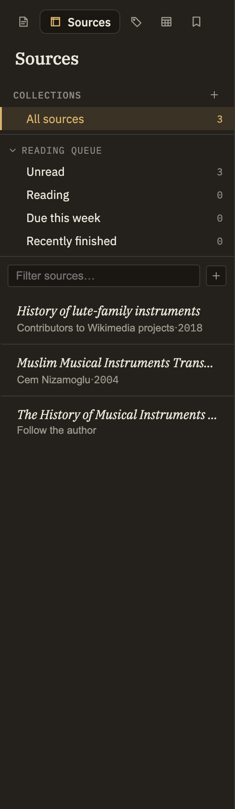

Docs/Left sidebar/Sources
Sources
The Sources tab is your working bibliography. A source is a web page, PDF, or reference you've captured — with its own details, its full text to read, and quotable passages you can cite from your notes. It lives alongside your notes as its own kind of content: not a list of bookmarks, but the library you're actually reading and writing from.
What a source is
Each source keeps two things together: its bibliographic details — title, authors, year, publisher, and more — and its text, which you can read and lightly edit right inside Minerva. Sources are kept separate from your notes, so your reading library never clutters your writing. You can still write a note about a source: the source view has a New note about this source action that starts a note already linked back to it.
Browsing the panel
Above the list of sources are three ways to narrow it down:
Each row shows the title, a small dot if you've set a reading status, and a byline with the authors, year, and — if you've set one — a due date. Click a row to open the source in its own tab, just like opening a note. Right-click for quick actions: rename, add a tag, add to or remove from a collection, set reading status or a due date, copy the reference identifier, pull in the works it cites, merge it into another source, or delete it.
Managing collections
Collections are how you sort your library into groups that make sense to you — a project, a class, a topic, a paper you're writing. A source can sit in as many collections as you like, so filing it in one place never takes it out of another. There are two kinds: ones you fill by hand, and smart ones that fill themselves.
Collections you fill by hand
Use the small + beside the Collections heading and choose New collection, then give it a name. To put sources in it, right-click any source and choose Add to collection, then pick the one you want; the same menu lets you take a source back out again.
Smart collections
A smart collection gathers sources for you from a rule, instead of being filled by hand. Use the same + beside the Collections heading and choose New smart collection, give it a name, and set its rule: either a set of tags (a source has to carry all of them to appear) or a reading status — Unread, Reading, Read, or Skipped. From then on it keeps itself current, adding and dropping sources as you tag them or change where you are in your reading. Smart collections appear under their own Smart heading; right-click one to change its rule, rename it, or delete it. Deleting a smart collection removes no sources, since its contents were only ever the result of its rule.
Getting sources in
Sources are always captured on purpose — nothing gets pulled in behind your back. There are a few ways to add one:
Adding a page again later refreshes its details but leaves its text as you left it — so any edits or reading progress you've made are safe.

Opening a source
Clicking a row opens the source in a tab. The top shows what kind of source it is, its title, its byline, and its tags. Below that are its details — publisher, year, a link to the original, reading-status buttons (click the active one again to clear it), and a due-date picker — plus buttons to open the original PDF (when there is one), rename the source, or remove it.
If the source has an abstract, it appears above the text. The text reads just like a note, and an Edit body toggle lets you make small corrections. Select any passage to save it as an excerpt — a quotation you can cite later — and a marker along the scrollbar shows where your saved excerpts sit. Further down, a References section lists the works this source cites, and a Referenced from section lists your notes that cite or quote it. Everything there is clickable.
Deleting a source also removes the excerpts you saved from it. Minerva asks once to confirm — with a "don't ask again" option — and any links in your notes pointing to it will stop working.
Citing a source from a note
You cite a source while writing, not from this panel. Reference a whole source to add it to a note's bibliography, or point at a saved excerpt to quote it directly — and every note that does so shows up in the source's Referenced from list. See Notes → Links for how citing works while you write.